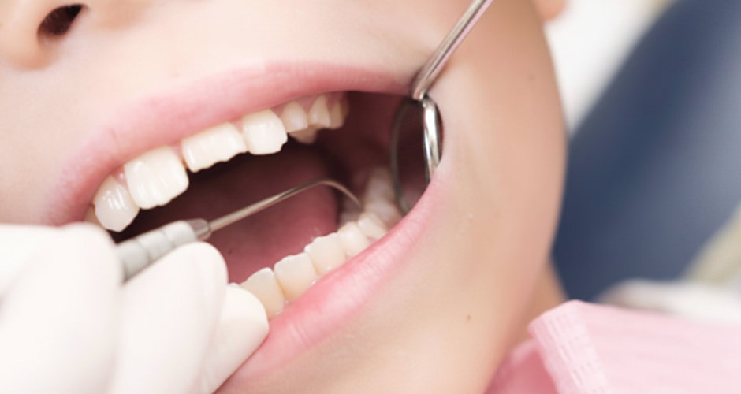
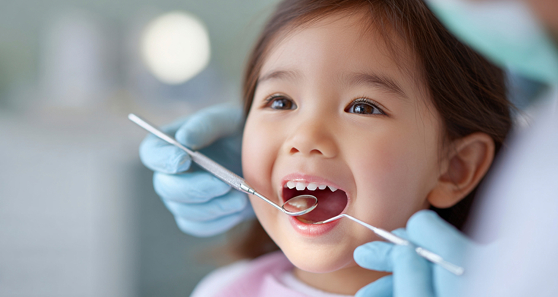
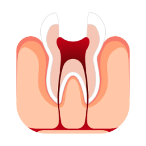
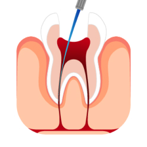
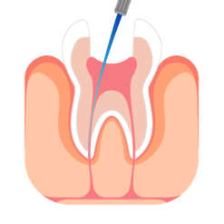
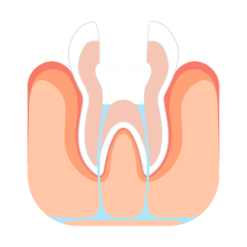
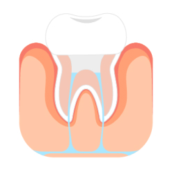
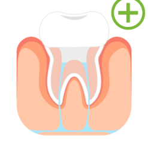

<%=m_client_en%>
아이들의 경우에도 충치가 커서 신경을 침범하게 된 경우
성인과 마찬가지로 신경치료(근관치료)를 진행하게 됩니다..
성인 영구치의 신경치료 보다 소아 유치 치료는 비교적 간단하고 내원 횟수가 적습니다.

아무리 유치라 할 지라도 곧 빠질 이가 아닌 이상 뒤이어 나올 영구치에게 영향을 줄 수 있기 때문에
이상이 있는 경우 가능한 한 빨리 치과에 내원하여 진료를 받는 것이 좋습니다..
그리고 아이들의 치아는 충치의 진행속도가 빠르고 통증이 발생하고 난 뒤의 치료는 아이와 어른들 모두에게 고통이기에
3개월 간격으로 정기적인 검진을 받으시며 미연에 예방하시기를 권장 드립니다.







근관치료와 신경치료는 사실 같은 치료 방법을 가리키는 말입니다..
이 치료는 치아의 내부에 있는 감염된 또는 손상된 치수(치아의 신경과 혈관이 있는 부분)를 제거하고,
그 자리를 청소하고 채워 넣어 추가적인 감염을 방지하고 치아를 보존하는 데 목적이 있습니다.